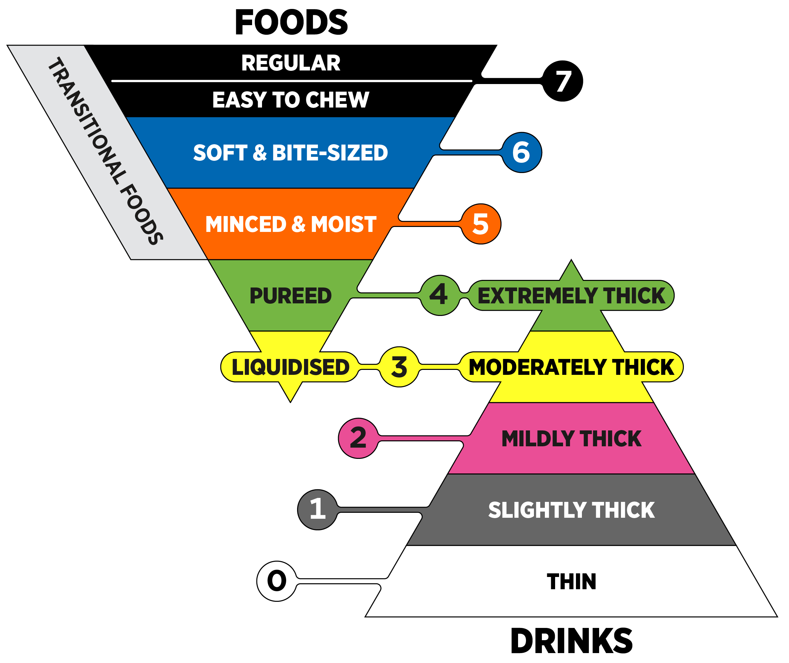

自我檢測工具
0–6 歲學齡前兒童發展檢核表（分齡 PDF）
發展遲緩自我檢測：依孩子實足年齡下載對應檢核表，逐項勾選五大發展領域。
PDF 下載›
0–6 歲學齡前兒童發展檢核表（分齡 PDF）
發展遲緩自我檢測：依孩子實足年齡下載對應檢核表，逐項勾選五大發展領域。
由臺北市政府衛生局編製，涵蓋粗動作、細動作、語言溝通、認知與社會情緒五大領域。請依孩子的「實足年齡」選擇對應檢核表：
- 有任一題勾「不會」，建議搭配〈孩子發展比較慢是發展遲緩嗎？〉的分齡警訊表進一步比對。
- 語言項目落後者，可再對照〈0–6歲語言發展里程碑對照表〉。
- 持續有疑慮請參考〈早療是什麼？〉安排專業評估——檢核表是篩檢工具，不是診斷。
資料來源：臺北市政府衛生局「學齡前兒童發展檢核表」。著作權屬原機關所有，本站僅作衛教推廣轉載；最新版本請以臺北市政府衛生局網站公告為準。
照護對照圖
IDDSI 國際吞嚥障礙飲食標準對照圖
食物與飲品質地 0–7 級分級對照，照顧者與醫療團隊的共通語言。
對照圖›
IDDSI 國際吞嚥障礙飲食標準對照圖
食物與飲品質地 0–7 級分級對照，照顧者與醫療團隊的共通語言。
IDDSI（International Dysphagia Diet Standardisation Initiative）將食物與飲品的質地分為 0–7 連續等級（飲品 0–4、食物 3–7），是目前國際通用的吞嚥安全飲食標準。

- 依語言治療師評估後的「等級處方」備餐，例如「飲品第 2 級（中稠）、食物第 5 級（細碎與濕軟）」。
- 搭配〈吞嚥困難的居家觀察重點〉與〈吃東西常嗆到怎麼辦？〉了解何時需要質地調整。
- 該調到哪一級由評估決定，過度限制質地反而影響營養與進食意願。
圖片來源：The International Dysphagia Diet Standardisation Initiative (IDDSI)，依 CC BY-SA 4.0 授權使用。詳細定義與測試方法請見 IDDSI 官方網站。
官方資源連結
評估與療育的官方管道
聯合評估中心、通報轉介、專業學會等可信賴的查詢入口。
外部連結›
評估與療育的官方管道
聯合評估中心、通報轉介、專業學會等可信賴的查詢入口。
- 衛生福利部社會及家庭署發展遲緩兒童早期療育服務：聯合評估中心與通報轉介中心名單、療育補助資訊。
- 發展遲緩兒童通報暨個案管理服務網各縣市早療通報與個案管理資源查詢。
- 台灣聽力語言學會語言治療師與聽力師的專業學會，提供民眾衛教資訊。
- 中華民國語言治療師公會全國聯合會全國語言治療師公會組織。
外部網站內容由各機構維護，連結僅供參考。